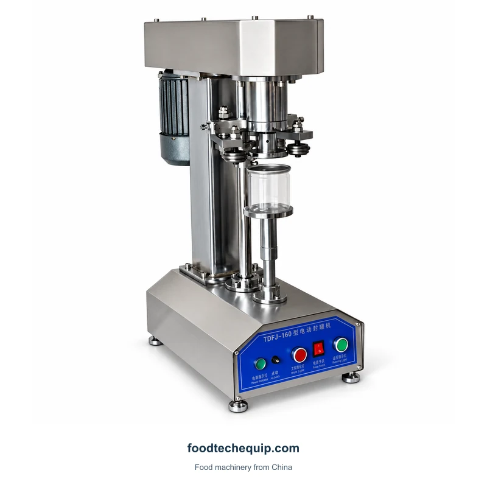

Équipements de remplissage
Remplisseuse de liquides en ligne
Configurations à 2, 4, 5, 6, 8, 10 ou 12 têtes de remplissage à pompe magnétique. Comparez le volume de remplissage et les dimensions du flacon selon la configuration.
Voir l’équipementFTE fournit et exporte des équipements de transformation et de conditionnement alimentaires depuis Xuzhou, en Chine. Comparez les machines de mélange, de dosage, de remplissage et de soudure. Pour un devis, précisez votre produit, les dimensions de l’emballage et la cadence requise.
Conseils d’installation · Formation des opérateurs · Pièces détachées · Assistance à distance




Équipements pour usages non alimentaires
Comparez les équipements de remplissage, d’ensachage et de conditionnement sous vide. Consultez les caractéristiques de chaque configuration.
Configurations à 2, 4, 5, 6, 8, 10 ou 12 têtes de remplissage à pompe magnétique. Comparez le volume de remplissage et les dimensions du flacon selon la configuration.
Voir l’équipement
Ligne de remplissage et de pesage pour poudres, avec transfert de la matière, convoyeur et commandes intégrées.
Voir l’équipementEnsacheuse verticale pour granulés, avec trémie et alimentation en film. Cadence indiquée : 10–23 sachets/min.
Voir l’équipement
Machine alimentée en film pour conditionner des liquides ou des sauces en sachets de forme spéciale. Cadence indiquée pour la configuration 200 : 35–100 sachets/min.
Voir l’équipementMachine verticale de conditionnement sous vide à aspiration externe, équipée d’une table à rouleaux qui soutient le sachet au poste de travail.
Voir l’équipement
Soudeuse sous vide sur pied équipée d’une table d’appui frontale et d’une barre de soudure supérieure.
Voir l’équipementIndiquez la matière, le format d’emballage et la cadence souhaitée. Nous vous aidons à comparer les configurations et à définir l’accompagnement nécessaire.
À propos de Food Tech Equipment Co., Ltd. ↗
Comment FTE peut aider ↗Matériau, taille du conteneur ou du sac, sortie et destination requises.
Examinez les modèles, configurations et compatibilités pertinents.
Discutez de votre devis, des conseils d’installation, de la formation et des pièces de rechange.
Commencez par la matière, l’emballage fini et les étapes de manutention. Nos guides indiquent les informations utiles pour comparer les configurations.
Explorer les guides de sélection ↗Indiquez votre produit, son mode de conditionnement et la cadence requise.